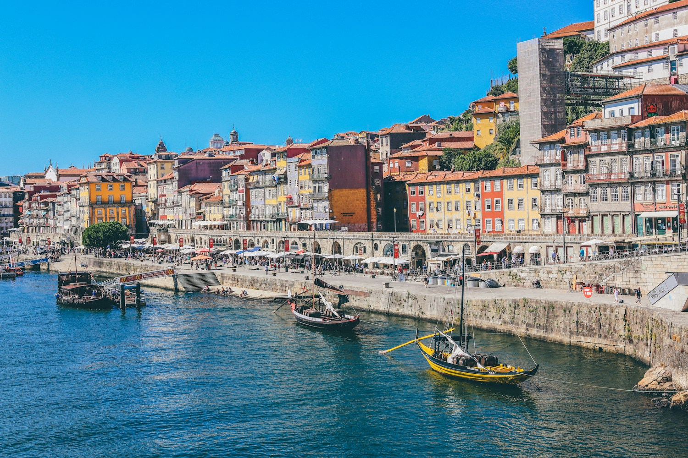

For the beautifully curious
Destinations48 Hours in Santorini:
Beyond the
Instagram Spots
We skipped the crowded caldera viewpoints and found hidden cliff-side tavernas, volcanic hot springs, and a winery that's been family-run since 1947.
Good stories take you places
Latest Stories.
Nine stories. A world of possibility.
A detour, not a dead end.
No sample stories match this view. Try another category or explore all stories.
An independent magazine concept. Archive counts, readership, dates and author profiles are illustrative; this edition contains 12 original sample previews, plus the featured story and Portugal notes.
One place. A thousand stories.
Destination Deep Dive
This month Portugal

Fall a little
for Portugal.
A love letter to the everyday
Why Portugal,
why now?
Some places ask you to slow down. Portugal makes it feel like your idea. Follow the Atlantic light from tiled Lisbon lanes to the Douro's terraces, with room for a long lunch in between.
Our 2026 notebook is about looking closer: small workshops, quieter trails, and the people who make a place feel like itself.
Real curiosity. Different perspectives.
Meet the Writers
Four perspectives.
One beautifully big world.
Little moments, far from ordinary
@WanderlustChron
Follow the journey, one frame at a time.